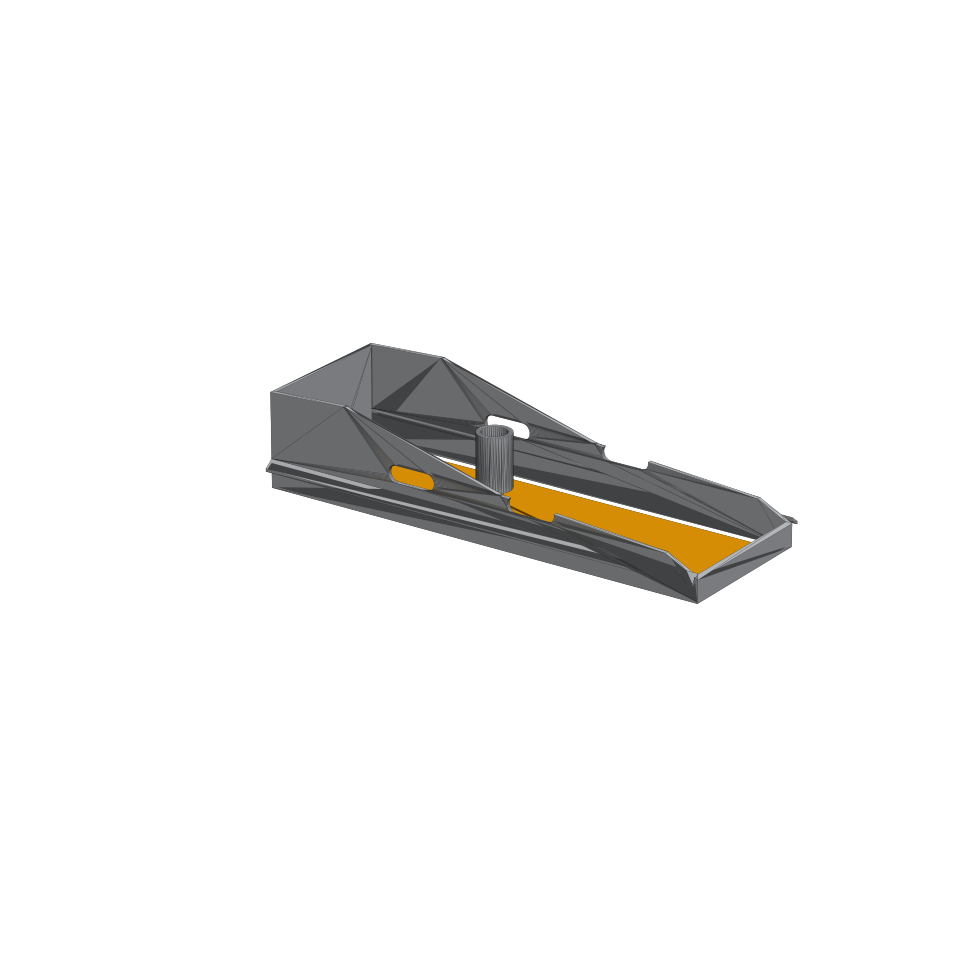

CAD Model & Engineering Mechanics
Current Reference: Cobra-Head Retrofit Hood v1.0 Assembly. Features are structurally isolated as independent solid bodies in the STEP assembly for independent testing and simulation.
CAD Assembly Rendering (v1.0)

The Target Baseline: Horizon Clarity

Maximizing vertical shielding allows communities to reclaim this unadulterated starry density from urban environments.
v1.0 Core Feature Breakdown
1. Side Overhang / Shielding Flares
Two thin angled plates are swept along the full length and unioned onto each side. These form the 13 mm shielding wings that extend past the fixture body to cut off lateral glare and light spill.
2. Aerodynamic Ventilation Slots
Four slot-shaped cutouts measuring exactly 25 × 75 mm (two per side) are subtracted directly through the main shell. These reduce the overall wind loading profile without compromising structural rigidity.
3. Photocell Opening & Raised Collar
A raised cylindrical collar is integrated onto the top surface with a concentric hole cut through its center. This configuration keeps the existing fixture's daytime photocell fully exposed and unhindered.
4. Top Mounting Slots
Four precision-cut slots near the upper surface match standard utility fastener positions to allow modular attachment points.
5. Rear Clamp Brackets
A separate hardware subsystem consisting of two L-shaped stainless steel plates with a specialized curved notch. Sized explicitly to grip a 1¼” to 2” OD tenon mounting arm.
6. Removable Amber Filter Panel
A separate thin box insert measuring 610 × 178 × 3 mm positioned securely in the bottom opening. It is left non-fused to the main hood structure to allow easy removal for regular cleaning and maintenance.